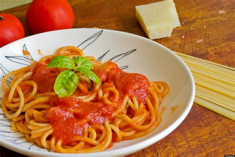

Best Eats In Indy
American
Chinese
Greek

Italian
These are the most popular food choices made by Hoosiers this week. Click the link and see the most awarded restaurants in Indiana. Choose from these four categories displayed above.